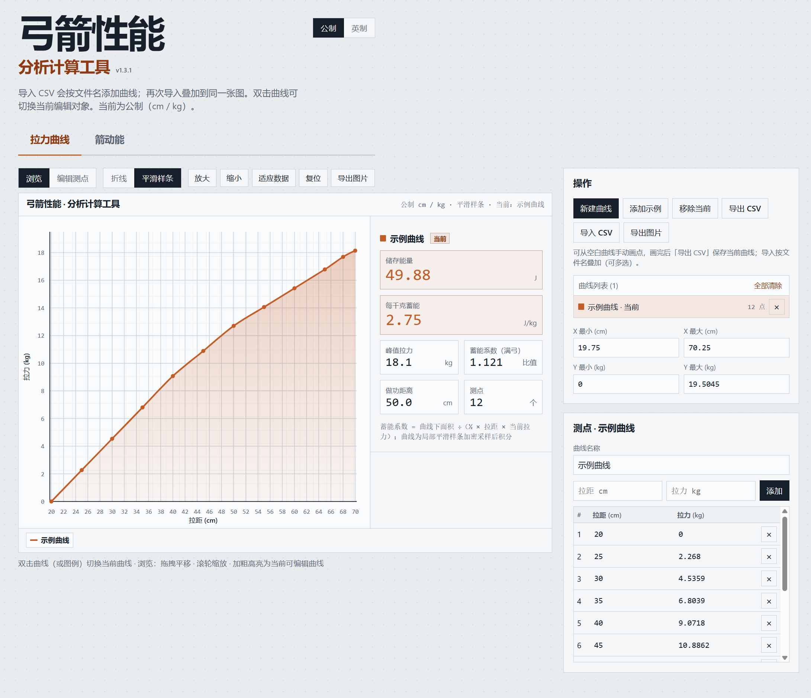
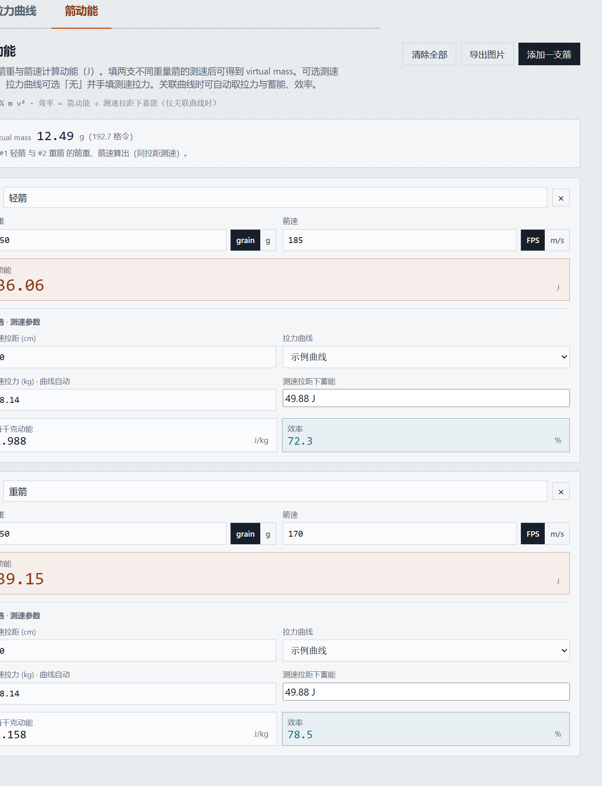

弓箭性能
本软件为绿色版：解压即可用，一般无需安装、无需联网。
| 名称 | 类型 | 说明 |
|---|---|---|
| 弓箭性能分析计算工具-1.3.1-绿色版.zip | 压缩文件 | 收到的安装包 |
| 弓箭性能分析计算工具\ | 文件夹 | 解压后的程序目录 |
| 弓箭性能分析计算工具.exe | 应用程序 | 双击启动（勿单独挪走） |
文件名类似：
弓箭性能分析计算工具-1.3.x-绿色版.zip
右键 →「全部解压缩 / Extract All」。建议解压到如
D:\弓箭性能分析计算工具\
，不要只在压缩包预览窗口里直接双击运行。
打开解压后的文件夹，双击
弓箭性能分析计算工具.exe
。若 Windows 提示「未知发布者」，选择「仍要运行」即可（绿色软件常见提示）。
启动后顶部为大标题「弓箭性能 / 分析计算工具」，旁有版本号。下方有两个功能页：

| 区域 | 做什么 |
|---|---|
| 左上工具栏 | 浏览 / 编辑测点、折线或平滑样条、缩放与适应数据 |
| 中间大图 | 拉力–拉距曲线；可叠加多条曲线对比 |
| 右侧「操作」 | 新建曲线、导入 / 导出 CSV、导出图片、曲线列表 |
| 右侧「测点」 | 给当前曲线命名，手动输入拉距、拉力并添加测点 |
| 右上角 | 公制 / 英制切换 |
右上角可随时切换，已输入的拉距、拉力会按规则换算。
| 公制 | 英制 | |
|---|---|---|
| 拉距 | cm | in |
| 拉力 | kg | Lb |
| 每单位蓄能 / 动能 | J/kg | J/Lb |
在右侧「测点」区域顶部的曲线名称中填写，例如
我的弓。列表与图例会同步；之后「导出
CSV」时，文件名就是这个名称。
至少 2 个测点后，侧栏会显示：
鼠标沿当前曲线滑动时，可看当前位置的拉力、蓄能与参考三角形。
两列：拉距、拉力。建议带表头并标明单位。
| 表头示例 | 软件如何理解 |
|---|---|
draw_in,force_lb 或 拉距英寸,拉力磅 |
英寸 + 磅 |
draw_cm,force_lb 或 拉距厘米,拉力磅 |
厘米 + 磅 |
| 拉距厘米,拉力千克 | 厘米 + 千克（内部换算为磅） |
| 无单位 / 无表头纯数字 | 默认按 cm + Lb |
我的弓.csv），不再附加 imperial / metric 后缀。

当你录入两支不同重量箭的质量与箭速后，页面上方会显示 Virtual mass：
切换回「拉力曲线」标签时，箭动能页已填数据会保留。
图片一般保存在浏览器 / 系统默认下载目录（桌面版同样走下载逻辑）。
确认是从解压后的完整文件夹启动；可尝试右键「以管理员身份运行」，或检查杀毒软件是否拦截。
检查单位是否与表头一致（英寸误当厘米最常见）。可先切换到对应单位制再导入，或改正表头后重试。
需要至少两支箭都填好有效质量与箭速，且两支箭重量要不同；箭速过于接近时也可能算不出。
效率依赖「关联拉力曲线 + 有效测速拉距」。拉力曲线选「无」时只手填拉力，不算蓄能与效率。
绿色版为本地运行，曲线与箭数据默认保存在当前会话中，不会自动上传到网络。